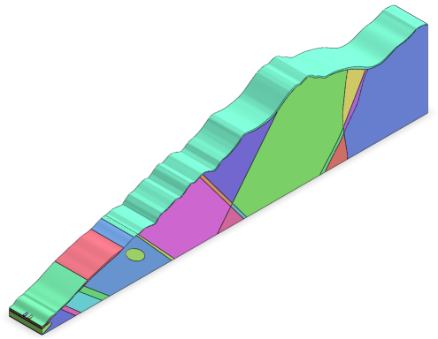
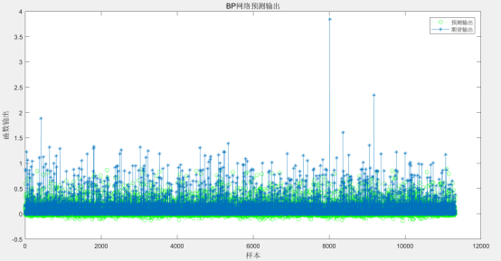
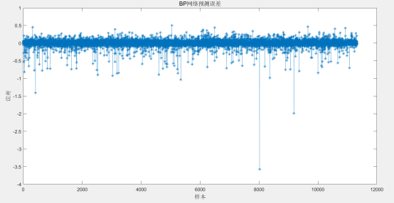

严田隧道位于吉安市安福县严田镇严田村附近，为一座分离式隧道，其起止桩号为ZK73+240～ZK76+860/YK73+245～YK76+870，隧道长度为3620/3625 米，净空（宽×高）10.75*5米。按照《公路隧道设计规范第一册土建部分》（JTG 3370.1-2018）分级，该隧道属于公路特长隧道。本标段勘察范围为ZK73+240～ZK75+120/YK73+245～YK75+120，长度为1880/1875米。隧道ZK73+240～ZK75+120/YK73+245～YK75+120 段内岩性主要为砂岩夹页岩及页岩。隧道入口段地层主要为残积层及全强风化砂岩夹页岩，电阻率低，为极破碎至破碎围岩，质地软，处理不当极易发生塌方。隧道洞身工程地质情况复杂，岩性主要以砂岩夹页岩。洞身段高密度电法及大地电磁测深显示多处为低阻异常区，推测为断层破碎带或构造破碎带，在这些破碎带中，为破碎岩体。隧道ZK73+240～ZK75+120/YK73+245～YK75+120 段围岩以Ⅲ至Ⅴ级为主。隧道开挖方法为双侧壁导坑法。
依据施勘报告，隧道轮廓截面洞型取“五心圆+仰拱”型。根据经验，侧宽的分析范围取为距离隧道内轮廓边缘3~5倍隧道净宽的区域，深度的分析范围取为距离隧道内轮廓底部3~5倍隧道净高的区域。模型以反重力方向为Z方向正向，隧道延伸纵向为Y方向正向，隧道，根据右手螺旋定理，隧道径向为X方向。

图 1 严田隧道几何模型

图 2. 严田隧道入口预测输出和期望输出图

图 3. 严田隧道入口预测误差图
由图2可知，严田隧道入口预测输出和期望输出结果基本吻合，走势基本一致。由图3可知预测数据和真实数据两者的误差基本在-0.5~0.5之间，误差范围较小，表明神经网络预测结果基本满足要求。